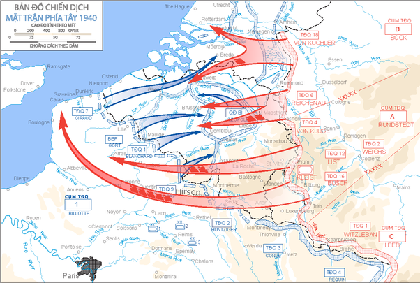
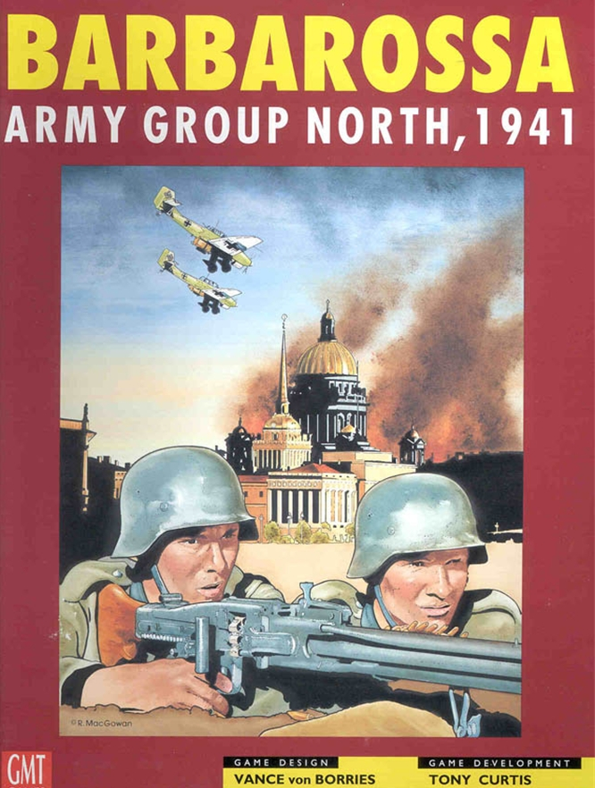
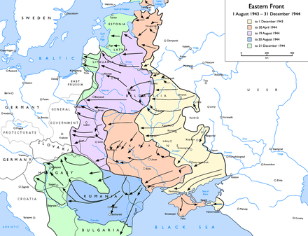

Erich von Manstein
The agreed upon best General of The Third reich,mastermind of Operation Sichelschnitt which was Germany's plan to invade France and was able to knock France out of the war in 6 weeks.
On June 6th Manstein was in charge of Amry group north During operation babarossa and manage to besiege Leningrad on Septemper 8 and Sevastapol on October 30. Manstein was able to take Sevastapol the next year but Leningrad was never taken as Hitler wants to starve the city into surrender instead of attacking it as he believe it would cost too much troops.
Manstein's biggest mistake was on December 12 1942 at the battle of Stallingrad were he believed that The Sixth army encircled inside Stallingrad could holdout inside Stallingrad by airdrop supplies and urges Hitler to not order The Sixth Army to break out of Stallingrad and that his army could relieve it .However,Manstein's attack was halted on December 23rd 40 kilometers outside of Stallingrad and was forced to Abandoned the Sixth army,leading to the lost of 300,000 German troops,and The Wehrmacht pushed out of the Caucasus region of the Soviet Union.

By 1943 The Red army had outumbered the Wehrmacht nearly 2-1,Manstein decided instead to taking ground,they would inflict heavy casualties to the Red army and negotiate a peace Afterwards and decides to order army group south to retreat to Kharkov and counter attack with an encirclement. The plan was successful and was alble to inflict 95,000 casualties while only suffering 10,000 casualties. But losing 95,000 Soviet soldiers out 6 million wasn't going to turn the tide. So Manstein decided the next attack would be and Kursk were he could encircle 500,000 enemy troops if sucessful.Unfortunately, the Soviet Commander Georgy Zhukov was able to predict Manstein's plans and when operation Citadel began,The Red army inflicted 54,000 casualties on the Wehrmacht.While the Wehrmact was inflicted 177,000 casuaties on The Red army,The Soviets could more easliy replace their losses while the Wehrmacht had no reserves left.

The Red army continues to push The Wehrmacht back to the Dnieper river.Hitler would relieve Manstein from command of The eastern front on March 30 1944 and He would never hold active command again.
After the war, Manstein was put in court on October 1945 and was charged with executing prisoner of wars on the eastern front,he was sentenced to 18 years in prison but it was later commuted to 12 years, He would be realeased on parole in 1953 and died of a stroke in 1973.